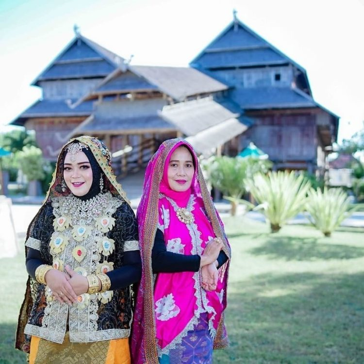
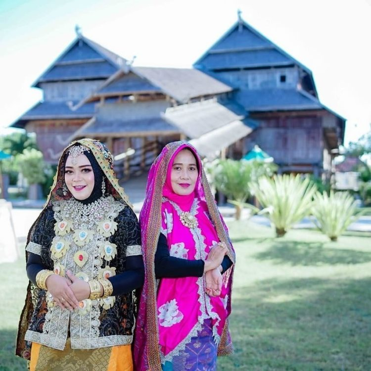

Suku Sumbawa yang dikenal juga dengan nama Samawa mendiami wilayah Sumba Barat, Nusa Tenggara Barat. Suku ini menyebut diri mereka sebagai Tau Samawa. Suku Sumbawa memiliki kerajinan khas berupa songket yang dibuat dari benang katun,
dan dihias dengan benang emas dan perak. Songket khas Sumbawa ini dinamakan Kere’ Alang. Pakaian adat wanita Sumbawa bernama lamung pene yang berupa baju kebaya lengan pendek. Sedangkan untuk bagian bawah adalah tembe lompa yakni
berupa sarung songket dengan motif kotak-kotak. Kain ini dikenakan hingga semata kaki.
Ikat pinggang perak menjadi aksesoris pelengkapnya di samping sapu tangan atau sapu to’a yang diselempangkan pada bahu kiri. Aksesoris lainnya berupa kalung, hiasan telinga yang dinamakan bengkor troweh, dan gelang tangan. Pakaian
adat laki-laki Sumbawa dinamakan Lamung. Pakaian ini memiliki model serupa jas lengan panjang yang tertutup bagian atasnya. Sebagai bawahan adalah berupa celana panjang yang disebut saluar belo. Celana panjang ini dilengkapi dengan
songket yang fungsinya seperti dodot. Perhiasan kepala kaum pria adalah berupa ikat kepala sapu dengan motif kotak-kotak. Ikat kepala ini dari tenunan yang terbuat dari benang katun Sumbawa. Lain lagi dengan pakaian pengantin Sumbawa.